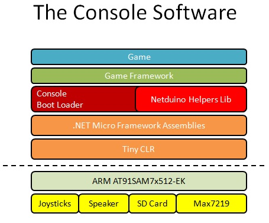

The PIX-6T4 Source Code
The PIX-6T4 code is open source and is part of the netduino helpers repository on CodePlex.
The projects that you will need to build are located in the \Samples\PIX6T4 folder:
The Brain
- ConsoleBootLoader: is the program that runs when you turn on the console. Its job is to read the content of the SD card, looking for game modules for you to select in a main menu. When a game is selected, it is dynamically loaded from the SD card and starts. When the game ends, the player is brought back to the main menu.
The Games
- Paddles: is a two player game of Ping Pong. Each player controls a paddle with one of the analog joysticks of the console, trying to hit the ball back to the opponent. A player scores a point when the other misses the ball.
- MeteorsFromOuterSpace: is a game where the player controls the movement of a small ship with the left stick of the console, and fires at meteors coming from all directions with the right stick. To shoot a meteor, just point the right stick in its direction
- Tunes: is a simple application playing the Pacman theme song.
- Sixty4Racer: Pete Brown's excellent racing game with a detailed how-to guide on creating your own game.
- Nom Nom: Stefan Thoolen's take on the classic 'snake game', perfectly re-mastered for the PIX-6T4.
To get you started quickly with your console, you can just download these applications. Then, open up the .zip file, place the folders that are on it on an FAT32-formatted SD card. Finally, insert the SD card in your PIX-6T4 console and play.
The Architecture
The following picture provides a simplified view of the software stack powering the console.
Each layer of the 'cake' has a corresponding abstraction in the framework that we provide.

Digging Deeper
If you want to explore how the 'layers of the cake' really work, you should dig into the pix6t4.netduino.helpers project:
- \Fun: abstracts the hardware away from the game code. It also provides a small framework to write your games simply and efficiently.
- \Hardware: contains all the drivers for the hardware components used to build the console.
- \Helpers: contains the resource loader used to read and execute games from the SD card
- \Imaging: provides an interface to build your game world, create and display sprites, test collisions between objects and display small and large fonts.
- \Math: a library of trigonometric functions, frequently needed when building games.
- \Sound: provides a simple method to play tunes using the standard Nokia RTTL ringtone format
Digging even deeper...
But wait, there's more! :) The pix6t4.netduino.helpers library is only a subset of the larger netduino.helpers library which contains drivers and sample applications for many more devices. Be sure to read the documentation page to find out examples of what you can build with it. It's constantly evolving with new hardware support, so visit the project page often.